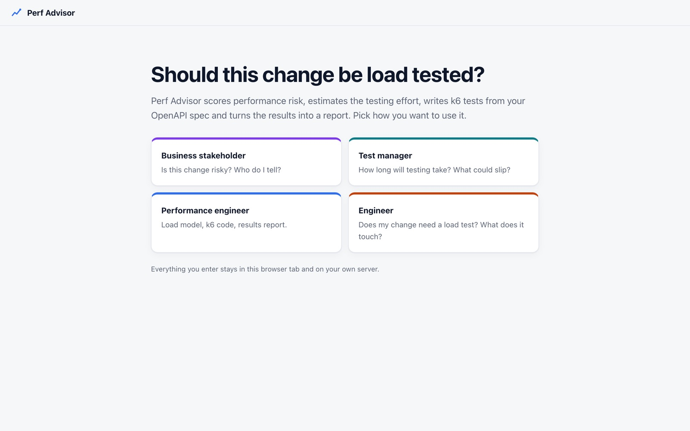
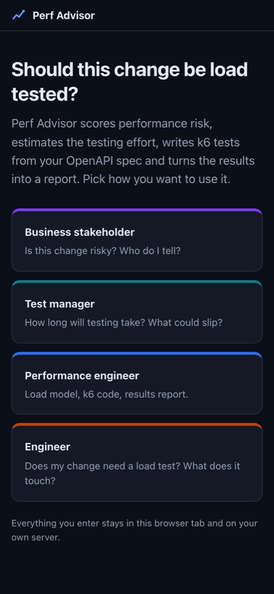
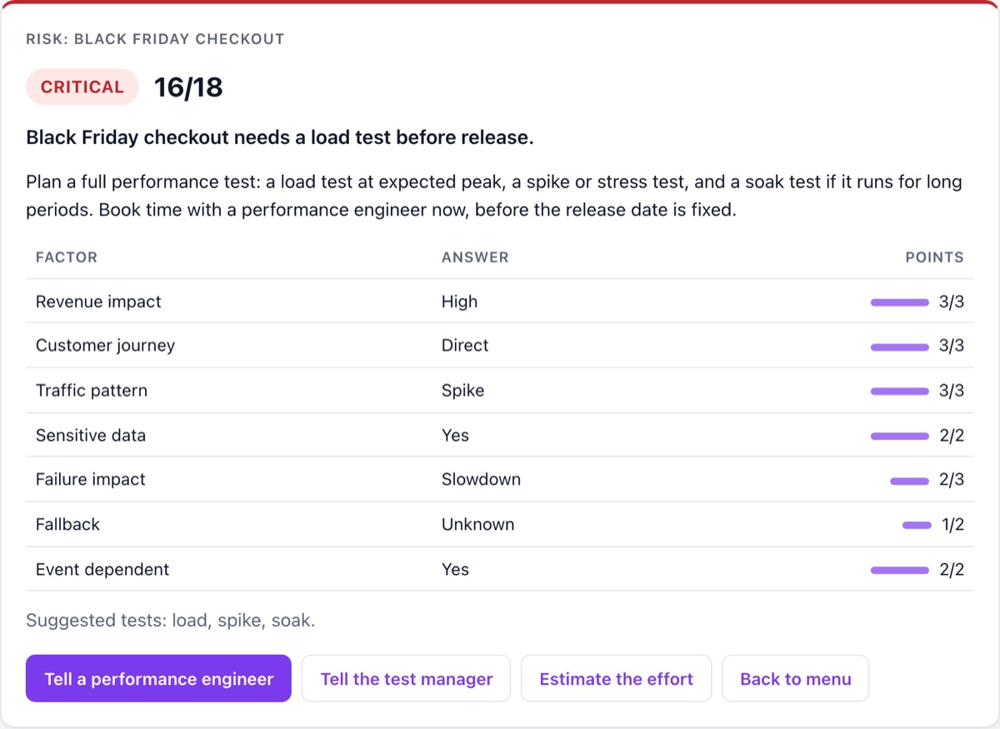
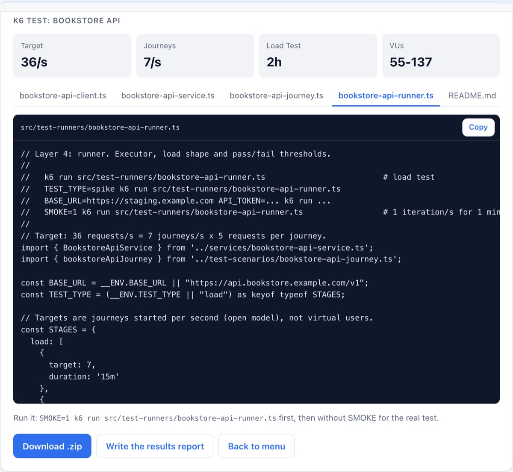
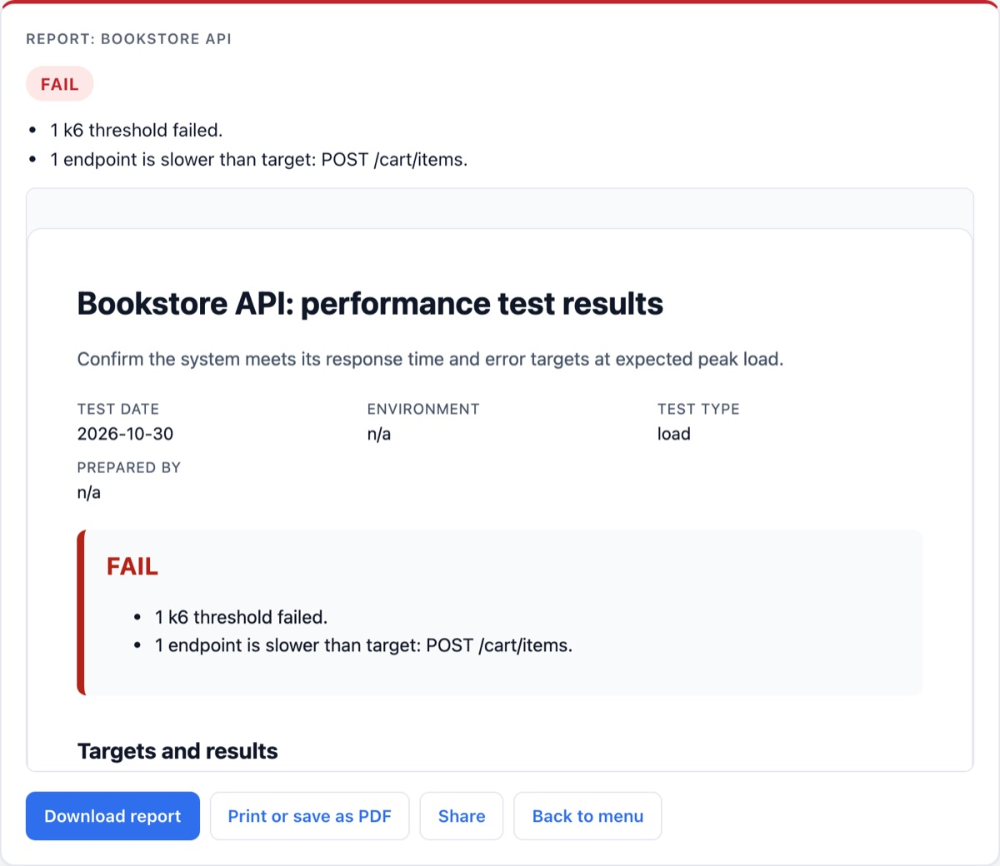

💼
Business stakeholders
A seven-question risk check: CRITICAL, MODERATE or LOW, with every point explained and a ready-to-send message to the engineers.
For QA, delivery and performance teams
Every release raises the same questions, and they land on one busy performance engineer. Perf Advisor answers them consistently: it scores the risk, estimates the effort, writes the k6 test from your OpenAPI spec and turns the results into a report anyone can read.
A$129one-off · self-hosted · your data never leaves your machines





Four roles, one tool
A seven-question risk check: CRITICAL, MODERATE or LOW, with every point explained and a ready-to-send message to the engineers.
An effort estimate: days for one or two engineers, sprints, a task breakdown, a sprint plan and the risks to the plan.
A four-question load test decision, and a change impact map of what calls their service and what it depends on.
All of that, plus the k6 generator and the one-click results report.
What's inside
OpenAPI 3 or Swagger 2, JSON or YAML. Pick a journey's operations and get a runnable k6 TypeScript test, with request bodies built from your schemas.
Open-model arrival-rate executor, VUs sized with Little's Law, and shapes for load, stress, spike, soak and breakpoint tests.
p95 and p99 targets, error rate per endpoint, and a dropped-iterations check so the test never quietly sends less load than you asked for.
Upload k6's summary and get a PASS, PASS WITH RISKS or FAIL report with KPIs and a per-endpoint table. Download or print to PDF.
Drafted emails, Slack and Jira text for every result. Optional Slack posts, Jira tickets, and GitHub or GitLab pull requests.
Everything is processed in the browser and nothing is stored on the server. Run it on a laptop, an internal server or Docker.
Who it's for
Questions
No. You run it yourself on a laptop, an internal server or Docker. Setup takes about 15 minutes, with a step-by-step guide.
No. It writes the k6 test; you run it with k6 on your machines or in CI. Then upload the summary for the report.
Yes. Risk weights, the decision rule, effort tables, default targets and load shapes live in short, commented files with unit tests.
Node.js 22 or Docker. The generated tests run on k6 v1.0 or later with no extensions.
I can set it up for your team and tune the rules. Email hello@pawansinha.com.au or see my performance testing service.
A$129, one-off. Self-hosted. Ready in about 15 minutes.